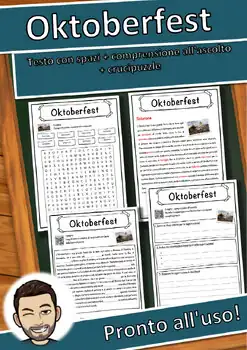
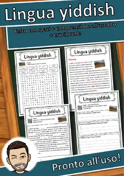

9th Grade Holidays & Traditions Worksheets
17 Holidays & Traditions resources for 9th Grade, ready to print: Natale, Civiltà occidentale, Diavolo, Fiaba and more. Each resource page shows the grade range, page count and a preview and links straight to the product on TpT.
17 resources

Natale e inverno – Italian Reading BUNDLE | Christmas & Winter Schede

Noël et l'hiver – French Reading BUNDLE | Christmas & Winter Fiches

Natale – Italian Reading Comprehension Worksheet (Scheda): Cloze & Listening

Civiltà occidentale – Italian Reading: Cloze, Listening & Word Search

Diavolo – Italian Reading: Cloze Text, Listening Task & Word Search (Scheda)

Fiaba – Italian Reading: Cloze Text, Listening Task & Word Search (Scheda)

Epilessia – Italian Reading: Cloze Text, Listening Task & Word Search (Scheda)

Elettricità – Italian Reading: Cloze Text, Listening Task & Word Search (Scheda)

Costa Rica – Italian Reading: Cloze Text, Listening Task & Word Search (Scheda)

Christkind – Italian Reading: Cloze Text, Listening Task & Word Search (Scheda)

Capodanno – Italian Reading: Cloze Text, Listening Task & Word Search (Scheda)

Carnevale – Italian Reading: Cloze Text, Listening Task & Word Search (Scheda)

Babbo Natale – Italian Reading: Cloze, Listening & Word Search

Avvento – Italian Reading: Cloze Text, Listening Task & Word Search (Scheda)

Adamo ed Eva – Italian Reading: Cloze, Listening & Word Search

Oktoberfest – Italian Reading Comprehension Worksheet (Scheda didattica)

Lingua yiddish – Italian Reading Comprehension Worksheet (Scheda didattica)
No resources found – try a different search term or filter.